服装
用相近版型叠出复杂裙子
先看要做成什么样
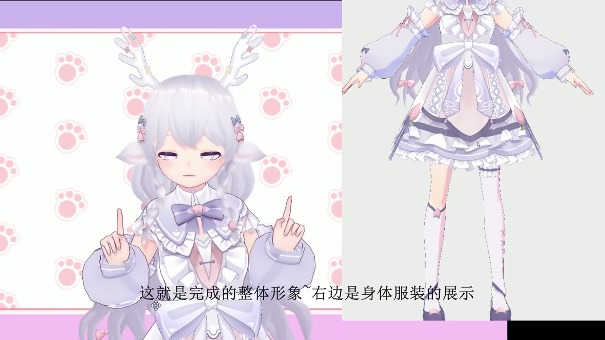
后面真正在改的是中间那个窗口。最左边一直贴着一张完成稿，不要把它当成正在编辑的模型。软件是 VRoid Studio，贴图画在旁边的 PaintTool SAI Ver.2 里。字幕后来说，这一集主要是衣服叠穿，头发绑骨也带一下。
选一条相近的短袖连衣裙
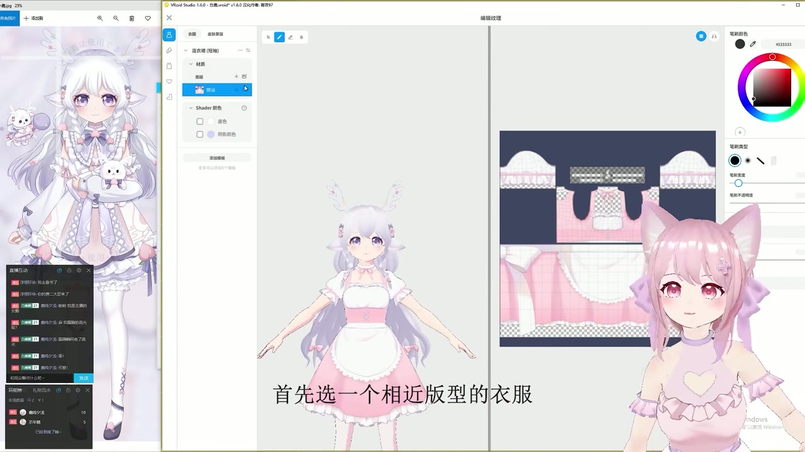
字幕是：首先选一个相近版型的衣服。选完的结果就是中间这个粉色围裙短裙，右边 UV 和身上是同一条。后面的花边、领子和大衣都画在这条裙子和另一件大衣上，不是从零铺一块新布。
贴图先做里面
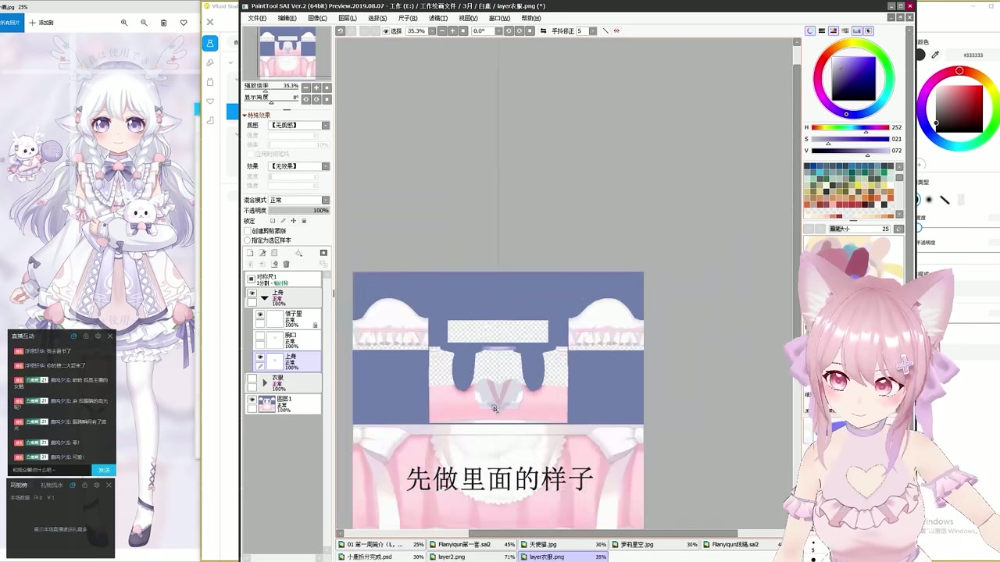
外层的蝴蝶结和裙摆先放下。先把里面那一层的粉色和领口边画出来，外面的花边才有东西可盖。这一步是在 SAI 里画导出的贴图，不是在 VRoid 的笔刷上直接涂。
裙子贴图上缩下宽，上面故意画宽
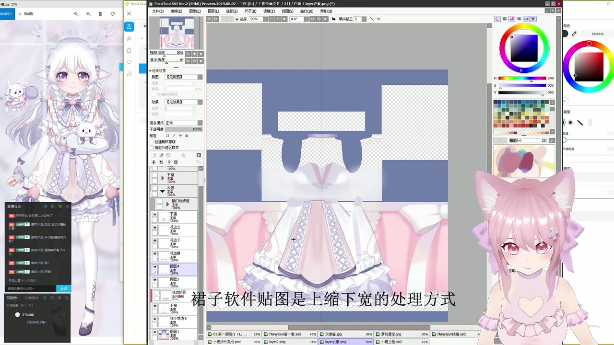
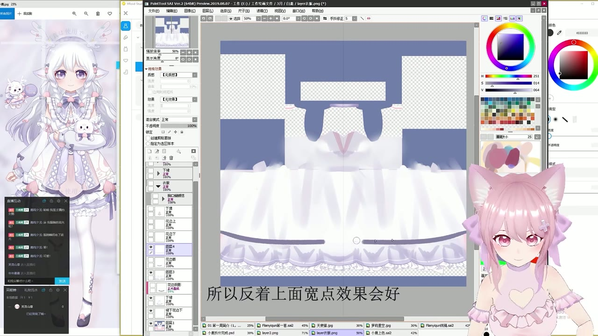
贴上身体之后，裙子贴图的上半会被压窄，下半会被拉宽。所以在 SAI 里要把靠上的那一截画得比想要的更宽，放到模型上才会接近原画。弧线是沿着荷叶边的上沿拉的，不是把整条裙子等比放大。
放回模型上看一眼
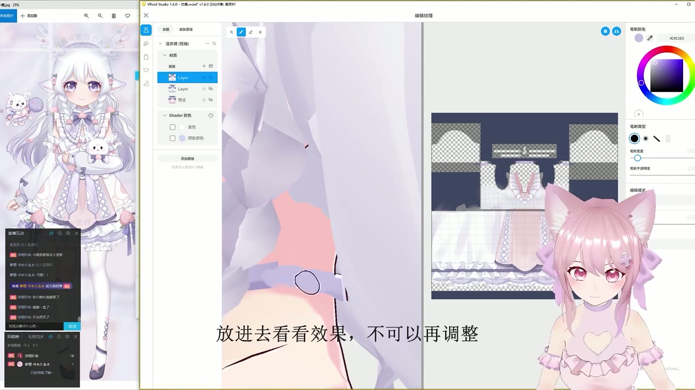
贴图放回去只是对一下位置和花边有没有歪。字幕说这一眼之后不可以再调整，所以花边的宽窄要在 SAI 里改完再放，不要指望在这个近景里把带子拖正。
领子单独做，多余的地方透明再叠
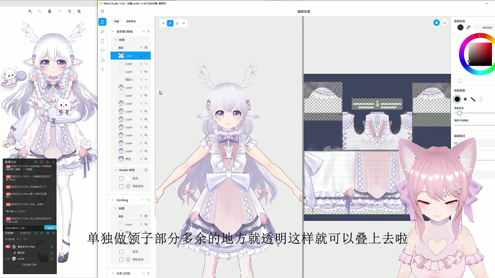
领子不画进裙子那一张里。单独做成一层，把领子以外擦成透明，再叠到连衣裙上，底下的胸口和裙摆才会露出来。这时身上已经有领结和围裙边，左边列表里裙子和大衣是两件衣服，不是同一件里的两个图层名。
鞋子开对称，记得画鞋底
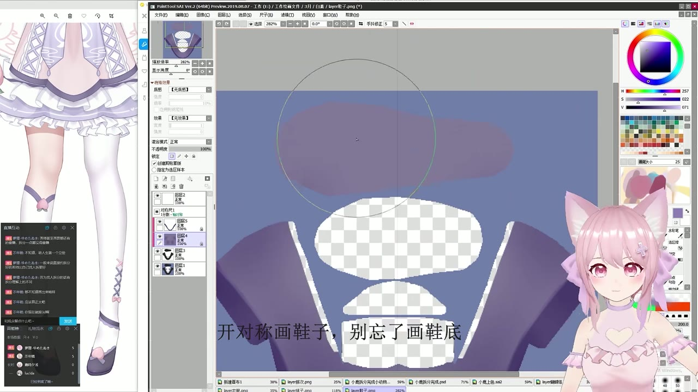
做鞋之前，字幕说过袜子也是画上去的，不是新的网格。鞋子沿中线对称着画，鞋面画完还要把鞋底那一块补上，否则翻过来是空的。左边预览里，小腿已经有桃心袜带和交叉绑带，脚上是一双深色鞋。
叠穿最多套五层
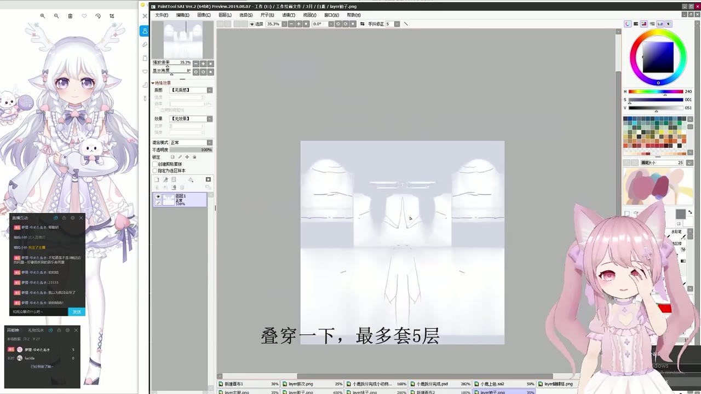
复杂的地方拆开套，不在一张贴图上画完。字幕把上限说成 5 层。放回模型的那一帧，添加模板下面写着至多可以添加 5 个模板。袖子、领子、大衣各是一层，套上去之前把不该挡住裙子的地方留透明。
泡泡袖软件不让画，就擦出来
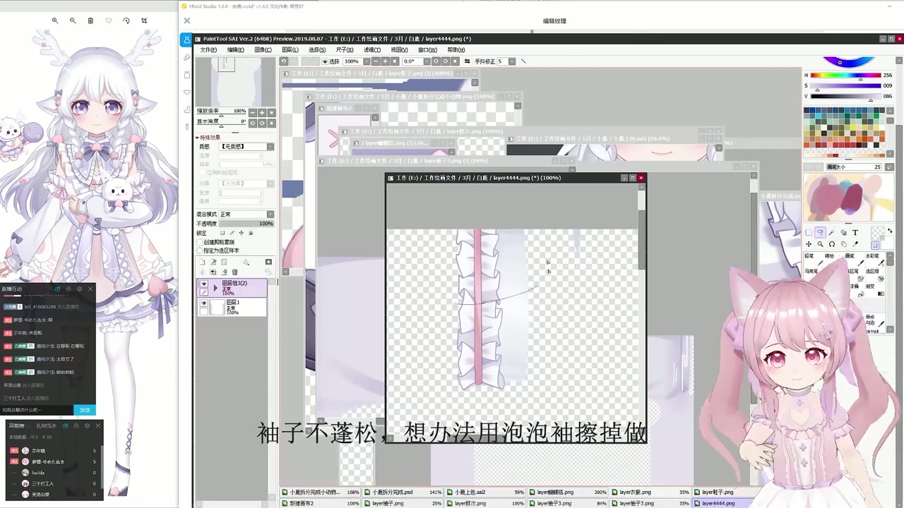
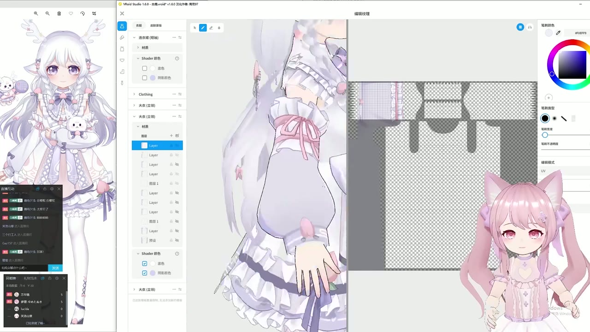
画袖子花边时，字幕先说想做这种花边但是软件不允许，就擦出来。这张接着写袖子不蓬松，想办法用泡泡袖擦掉做：按泡泡袖的形把不蓬的地方擦掉。再过一会儿字幕写成桃子变形了，我就反变形，把拉歪的那下拉回去。下一张就是这句字幕时的袖口，鼓起来的袖子挂在大衣上。
头发一键绑骨
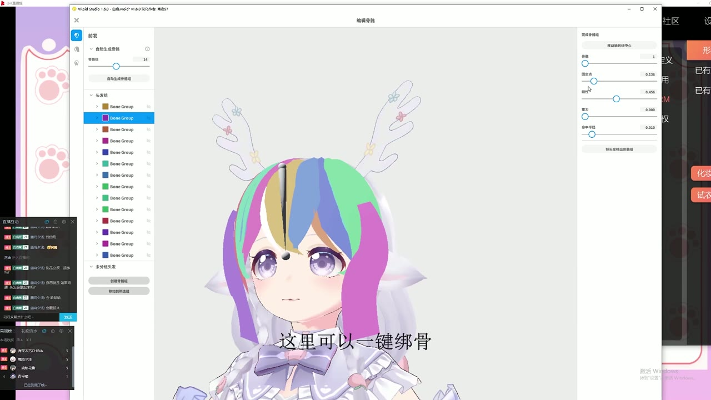
衣服套完才开这个窗口。前发按颜色分成一块一块，字幕说可以一键绑骨，按钮就在数字 14 下面，不用一根一根拉。这个画面里按钮没有被点下去。过一会儿关掉编辑器，会弹出关闭骨骼编辑器，问要不要在关闭前保存，新项目会进「自定义」选项卡。要保存的项目里前发是勾上的，后发和鬓角没勾。按钮是保存为新项目、覆盖、关闭但不保存。同一段字幕还说右上角有个相机，里面可以看动作；相机没有被点开。
后发对一下，准备走两步
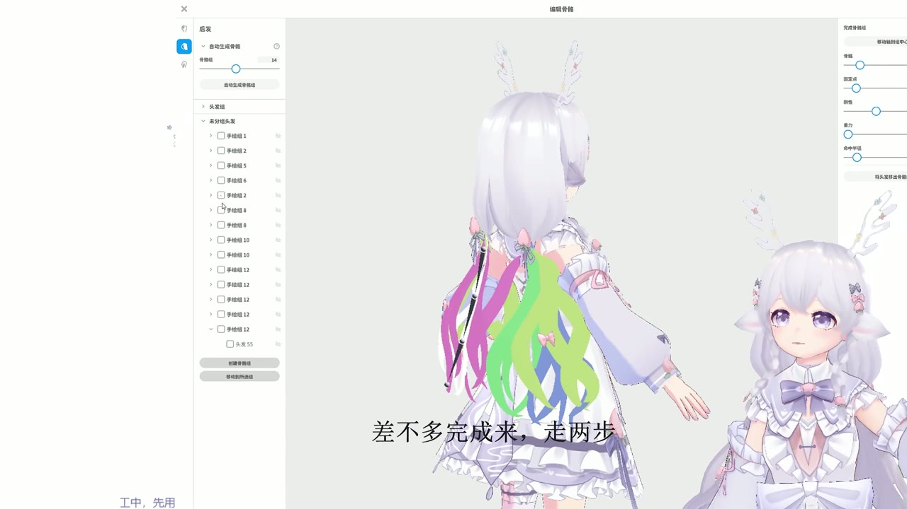
后发用同一套按钮：自动生成骨骼组、创建骨骼组、移动到所选组。变色的那几缕是用来对已经分开的头发，不是新的衣服。背后的大蝴蝶结、裙摆和袖口还是前面叠上去的样子。字幕说走两步，是要看骨头和裙子会不会穿帮，不是再画一层贴图。